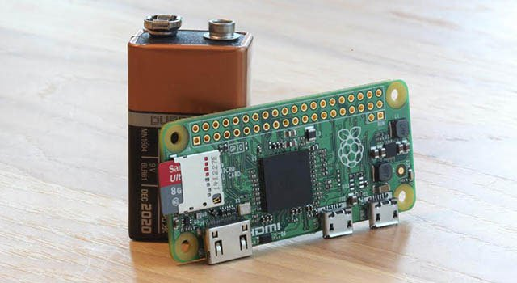
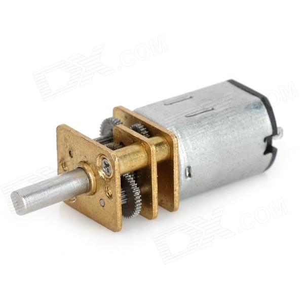
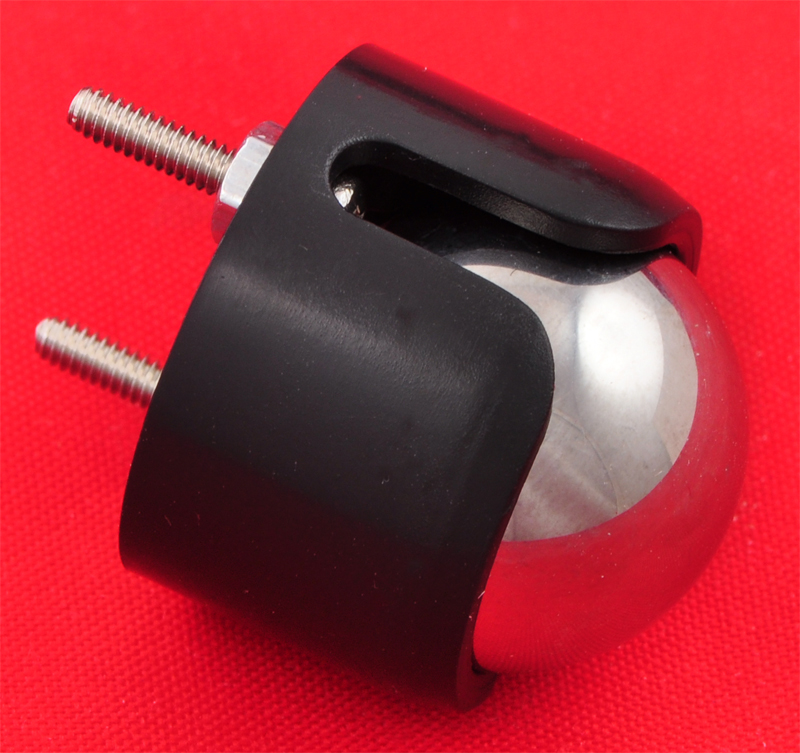
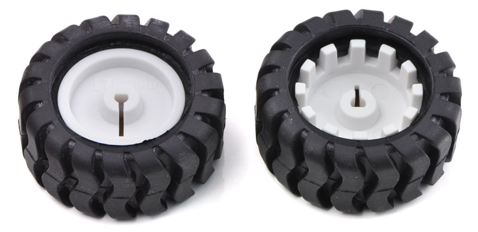
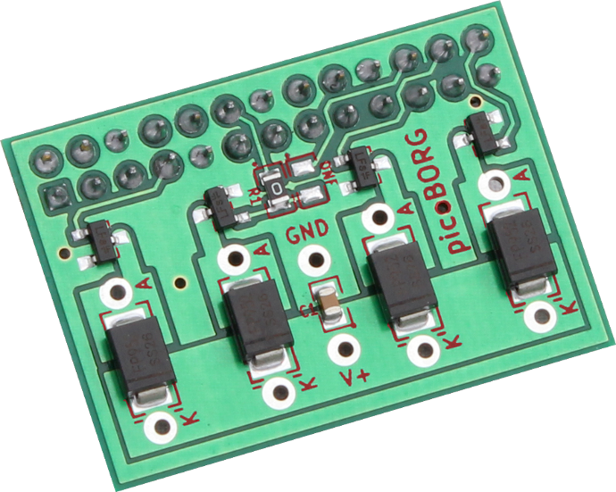
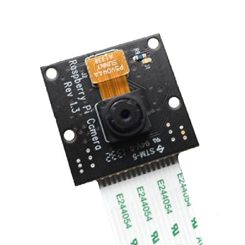
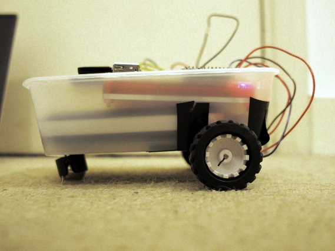

class: center, middle # Bob: A Scalaz-Stream controlled Raspberry Pi robot ## Martin Carolan --- # What's a Raspberry Pi? -- * A small computer -- * Doesn't cost much £££ -- * It's really easy to hook them up to things * general purpose input/output connector * USB, video, audio --- class: center, middle # Perfect! --- class: center, middle name: pizero  {{content}} --- template: pizero ## Raspberry Pi Zero --- template: pizero ## £4 computer! --- template:pizero ## Ultra-low power consumption --- template: pizero ## Dead, dead light --- template: pizero ## Not ideal, though --- template: pizero ## But why? --- template: pizero ## No CSI connector: can't attach a camera --- # Bob uses a Raspberry Pi model 2 B <img src="pi2b.jpg" width="640" height="480" /> --- class: center, middle # 1 Gb RAM --- class: center, middle # Quad core 900mhz CPU --- class: center, middle # CSI connector: Bob can see! --- class: center, middle # What else was needed to build Bob? --- class: center # 2 x Micro-gear motor: £3.51 each  --- class: center # Ball caster: £2.20  --- class: center # 2 x Wheel: £2.20 each  --- class: center # Motor control board: £6.99  --- class: center # Raspberry Pi Camera: £18  --- class: center # Portable Micro-USB charge pack --- class: center # Wifi USB Adapter: £8.99 --- class: center # Whatever chassis materials you have: Bob used to live in a carton from a Chicken Tikka  --- class: center, middle # How does Bob move? --- class: center name: bob <img src="bob.png" /> {{content}} --- template: bob ## Bob has 2 DC motors --- template: bob ## Motor controller powers them by a dedicated 12V battery --- template: bob ## The Raspberry Pi tells the motor controller which motors to turn on using 4 GPIO Pins --- class: center <img src="bobleft.png" /> ## Left! --- class: center <img src="bobright.png" /> ## Right! --- class: center <img src="bobforward.png" /> ## Forwards! --- class: middle, center # Controlling GPIO with Scala --- class: middle ## A GPIO pin can be used digitally ```scala sealed trait State case object High extends State case object Low extends State ``` We give it only 2 possible states: * High (outputting 5V of power) * Low (not outputting any power) --- class: middle ```scala trait DigitalOutput { def enterState(state: State): Task[Unit] } ``` We can say the pin is a `DigitalOutput`: it has a function that: * Given a desired `State` (`High` or `Low`) * Will give you back an asynchronous container * When run, it will have a side-effect of causing the GPIO pin to enter the state you desired --- class: middle ## My implementation wraps around the pi4j Java Library ```scala case class PiDigitalOutput(pin: GpioPinDigitalOutput) extends DigitalOutput { override def enterState(state: State): Task[Unit] = Task { state match { case High => pin.high() case Low => pin.low() } } } ``` It just makes the library a bit more Scalary --- class: middle # A left and a right motor control Bob ```scala trait Controller { val leftMotor: DigitalOutput val rightMotor: DigitalOutput def shutdown: Task[Unit] } ``` ## 2 digital outputs --- class: middle ### Again, the implementation is just a wrapper around pi4j ```scala case class PiController(controller: GpioController) extends Controller { val leftMotor = PiDigitalOutput(controller.provisionDigitalOutputPin( RaspiPin.GPIO_01, PinState.LOW)) val rightMotor = PiDigitalOutput(controller.provisionDigitalOutputPin( RaspiPin.GPIO_07, PinState.LOW)) override def shutdown: Task[Unit] = Task { controller.shutdown() } } ``` --- class: middle ### How do we use the `Controller` to make Bob do things? ```scala case class Action(leftMotorState: State, rightMotorState: State) extends ((Controller) => Task[Unit]) { def apply(controller: Controller): Task[Unit] = for { _ <- controller.leftMotor enterState leftMotorState _ <- controller.rightMotor enterState rightMotorState } yield () } ``` ```scala object Forward extends Action(High, High) object Left extends Action(High, Low) object Right extends Action(Low, High) object Halt extends Action(Low, Low) ``` --- class: center name: scalazstream # Scalaz-Stream {{content}} --- template: scalazstream ## A streaming I/O library for Scala --- template: scalazstream ## But why? --- template: scalazstream ## I wanted an excuse to play around with it --- template: scalazstream ## It'll be replaced by a library called FS2 soon --- template: scalazstream ## Because some people fell out in a chatroom --- template: scalazstream ## But the concept will still be the same --- # scalaz.stream.Process * A `Process` represents a (possibly infinite) stream of instances of a type -- * Some data will be pulled from some `Source` -- * The data will be sliced and diced in the usual manners (`filter`, `map`, etc.) -- * Some data can then arrive at a `Sink` -- * Effects, such as asynchronicity, may be encountered along the way --- class: middle, center ### By default, there is no concurrency within a `Process` #### Data will flow through the it sequentially --- class: middle, center # You must ask for concurrency ## Usually when merging multiple `Process`'s together